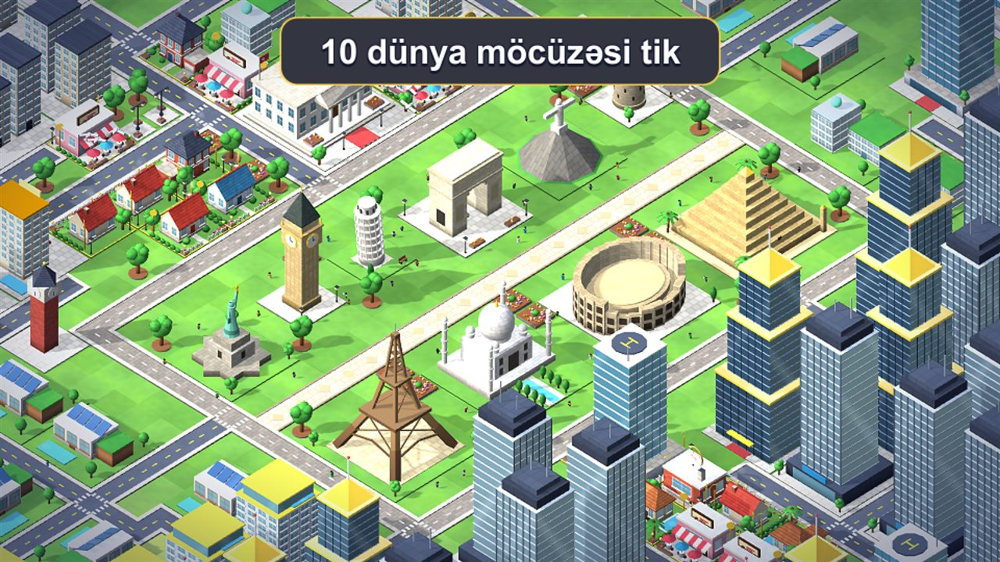
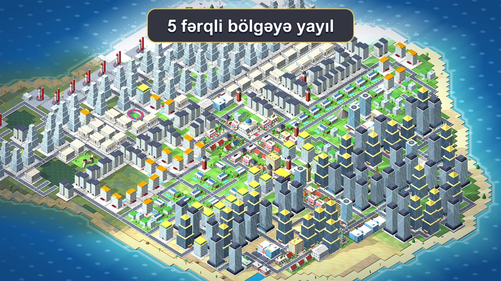

O oyunları maraqlı edən nə idi?
Sadə tikinti, hər dəfə pul yığanda gələn xoş an və bir neçə evdən yavaş-yavaş göydələnlərə qədər böyüyən şəhər. İstər iki dəqiqə, istər bütün axşam oynayırdın; geri qayıtmaq üçün həmişə bir səbəb var idi.
2010-cu illər ətrafında Facebook-da Millionaire City, CityVille və SimCity Social kimi sosial şəhərsalma oyunlarını milyonlarla insan oynayırdı. Bir şəhər qurur, evlərindən pul yığır, torpağını genişləndirir və hər küncü bəzəyirdin. Bu oyunların çoxu artıq mövcud deyil, amma verdikləri hiss hələ də yaddadır. Money City o oyun tərzi üçün darıxanlar üçün hazırlanmış yeni və orijinal bir oyundur.
Google Play-dən yüklə
Sadə tikinti, hər dəfə pul yığanda gələn xoş an və bir neçə evdən yavaş-yavaş göydələnlərə qədər böyüyən şəhər. İstər iki dəqiqə, istər bütün axşam oynayırdın; geri qayıtmaq üçün həmişə bir səbəb var idi.
Money City Android üçün rahatladıcı şəhərsalma və varlanma oyunudur. Evlər tikir, 1 dəqiqədən 3 günə qədər kirayə müqavilələri bağlayır, kirayəni bir toxunuşla yığır və kiçik bir kəndi meqapolisə çevirirsən. Beş bölgəli bir adada yeni torpaqlar alır, binaları 5 ulduza qaldırır, park və heykəllərlə bəzəyir və gəlirini artıran 10 dünya möcüzəsi tikirsən.
Money City tək oyunçulu oyundur və internetsiz işləyir. Sənə Facebook hesabı, sorğu göndərəcəyin dostlar və ya internet bağlantısı lazım deyil. Reklamlar istəyə bağlıdır: yalnız bonus istədikdə baxırsan. Oyun 12 dildə mövcuddur və telefonunun dilində açılır.



Xeyr. Money City müstəqil bir tərtibatçının hazırladığı orijinal oyundur. Bu oyunlarla və ya onların sahibləri ilə heç bir əlaqəsi, tərəfdaşlığı yoxdur və onlar tərəfindən təsdiqlənməyib.
Şəhər qurmaq və binalarından kirayə yığmaq kimi eyni rahatladıcı ideyanı paylaşır; buna internetsiz oyun, kirayə müqavilələri, beş bölgə və dünya möcüzələri kimi müasir mobil xüsusiyyətlər əlavə edir.
Xeyr. Money City tək oyunçulu oyundur. Tək başına və internetsiz oynaya bilərsən.
Money City Android üçün Google Play-də mövcuddur.
Millionaire City, CityVille və SimCity Social müvafiq sahiblərinin ticarət nişanlarıdır. Onlar yalnız bir oyun tərzini təsvir etmək üçün xatırlanır. Money City bu oyunlarla və ya onların sahibləri ilə əlaqəli deyil və onlar tərəfindən təsdiqlənməyib.